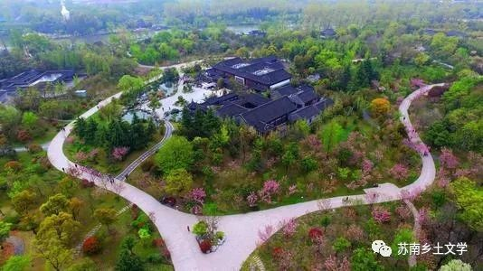

《春尽江南》
《春尽江南》是格非的长篇力作，也是他呕心沥血十余年、探索一个世纪以来中国社会内在精神衍变的系列长篇小说的收官之作。前两部《人面桃花》和《山河入梦》，写的分别是国民革命早期和五六十年代的中国；而这部《春尽江南》则对准了当下中国的精神现实。这部小说，信息量大，艺术结构高超；主体故事的时间跨度只有一年，而叙述所覆盖的时间幅度则长达二十年。小说通过描写诗人谭端午和律师庞家玉（原名李秀蓉）这对渐入中年的夫妻及其周边一群人近二十年的人生际遇和精神求索，广泛透视了个体在剧变时代面临的各种问题，深度切中了我们时代精神疼痛的症结。
1女性地位的崛起
体现在女性对事业的拼搏、对传统婆媳关系逆来顺受的反抗、对自身欲望的追求、对婚姻的反抗等。
那是一份简单的离婚协议。在这份协议中，庞家玉只主张了一项权利，那就是，唐宁湾的房子归她。虽说事先并无离婚的任何征兆，但端午很清楚，这不是在开玩笑。
她像一个上满了发条的机器，一刻不停地运转着。白天她忙于律师事务所的日常事务，忙于调查、取证和出庭，到了晚上，她把所有的精力都用来折腾自己的儿子。她逼儿子去背《尚书》和《礼记》，对儿子身上已经明显表露出的自闭症的兆头却视而不见。她自学奥数、华数和概率，然后再回来教他。她时常暴怒。摔碎的碗碟，已经赶上了顶碗杂技训练的日常消耗。她的人生信条是：一步都不能落下。
2法律不健全的社会现实
体现在谭端午家的房子被外人强占而无法申诉，更可笑的是，他的妻子还是一名律师。
“等等！她们把人家的房子霸占住，白住了一年，我们不跟她要房租，就算是客气的了，哪有她们反过来跟我们要钱的道理？这世界上还到底有没有是非？”
绿珠发来了她新写的一首长诗。其余的，都是垃圾邮件：妙男养生；欧洲深度游；贩售香烟；提供各类机打“发漂”。诸如此类。让端午百思不得其解的是，几乎所有向他兜售发票的人，都把“票”写成了“漂”。似乎任意加上一个偏旁部首，就可以使令人生畏的法律，变成一纸空文。
3苏南俚语
“策难！侬格小赤佬，哪能格能副样子！侬以为侬是啥宁，弗来三格！”
“日你妈妈！来噢，五十块钱，阿去啊？”
4当代气息
1、自然环境的恶化。
他（端午）的头痛得像要裂开似的，偶尔睁开朦胧的醉眼，张望一下车窗外的山野风光，也无非是灰蒙蒙的天空、空旷的田地、浮满绿藻的池塘和一段段红色的围墙。围墙上预防艾滋病的宣传标语随时可见。红色砖墙的墙根下，偶尔可以见到一堆一堆的垃圾。
奇怪的是，他几乎看不到一个村庄。
在春天的田野中，一闪而过的，是一两幢孤零零的房屋。如果不是路边肮脏的店铺，就是正待拆除的村庄的残余——屋顶塌陷，山墙尖耸，椽子外露，默默地在雨中静伏着。他知道，乡村正在消失。据说，农民们不仅不反对拆迁，反而急不可待，翘首以盼。但不管怎么说，乡村正在大规模地消失。
3、当代乡村：景观化下的乡村，农村的新变化。
他们很快就来到了半山腰。由一条悬浮于深涧溪流之上的小板桥进入了村庄。
这个村庄，建在山坳里的一片缓坡上，村子里庭院寂寂。家家户户的房舍式样都是一样的：灰泥斑驳的山墙，灰黑色的鱼鳞状碎瓦露出屋檐外煤黑的椽头，小巧玲珑的庭院，被绳子磨出深槽的水井。东一处、西一处的油菜花，长势不良。青草池塘早已见底，浮着一层厚厚的绿苔。透过树篱和漏窗，可以看见摩肩接踵的游人在院中出没。或者在井栏边打扑克，或者举着照相机东游西荡。
遗憾的是，村中几乎见不到一个居民。
导游介绍说，村子里绝大部分的本地人，早在两年前，就被迁到了十公里之外的窦庄。当然，他们是“自愿的”。
绕过一个倒塌的碾坊，一座残破的古庙，端午很快就看见一座巍峨的高大建筑，出现在不远处的桃花林中。这幢楼宇的式样别有风致。重重叠叠的马头墙，显得高大凌厉，完全遮住了屋脊和灰瓦。一带粉白的护墙，探出了香樟和银杏的枝干。如意门楼的东西两侧，各有一棵支着铁架的蜀府海棠。
这大概就是导游一路上津津乐道的王观澄的故居了。
他不无夸耀地提到了农村的新变化。正在进行的大规模的拆迁。新建的航空工业园外，甚至停着一架报废的麦道82飞机。八车道宽敞的马路，三个小时可达杭州。亚洲最大的造纸厂。镇上的瑞典籍工程师。他甚至还提到了在四星级宾馆门前公然拉客的妓女。说起这些变化，老骆的脸上不无骄傲之色。
感悟
在格非的文字中，“纯真少女的堕落”就像一个悲伤的印记一样，其背后是对整个时代风气不正、人心不古、纯真不再的哀叹。《春尽江南》中亦是如此。秀蓉纯真形象的两次摧毁，一次代表着一种纯真被俗化的悲哀，后一次则是面对命运无法挽回的无奈。循着谭端午和秀蓉的足迹，我们得以窥见当代乡村和城镇面临的生存困境。乡村翻天覆地的变化，各种新鲜事物的涌入，无论是实体的乡村景貌还是漂浮在乡村上空的人性解放、善恶纠葛，在格非的笔下，都变得鲜明而立体，营造了别具一格的现场感。“我爱你。如果你还相信的话。”这是秀蓉在行将就木之际写给端午的遗书，更是作者对这个时代，对乡村矢志不渝的赤子之心。